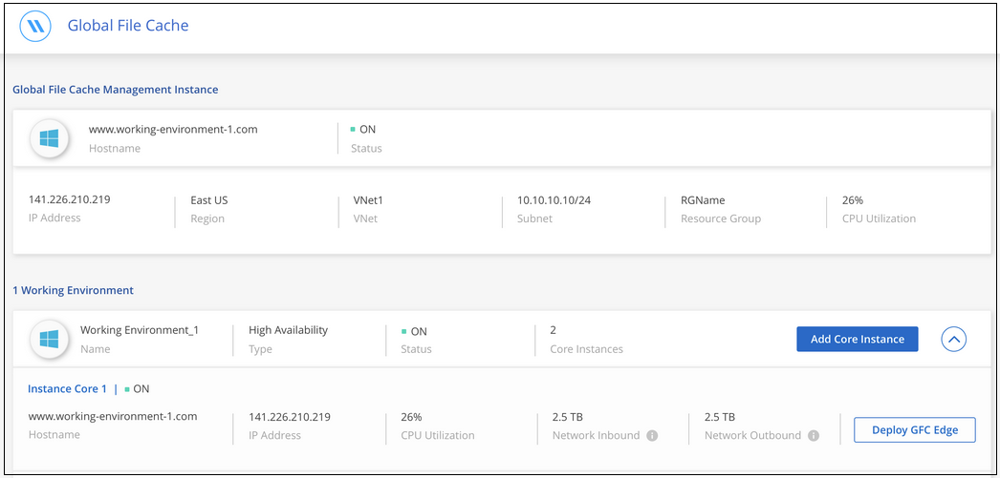
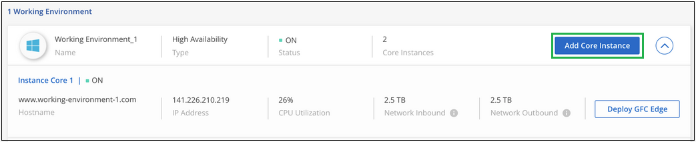

Richiedi modifiche alla documentazione
Richiedi modifiche alla documentazione Modifica questa pagina
Modifica questa pagina Scopri come collaborare
Scopri come collaborarePer iniziare
Collaboratori
Si utilizza BlueXP per implementare il software BlueXP edge caching Management Server e Core nell’ambiente di lavoro.
Abilitare il caching edge BlueXP utilizzando BlueXP
In questa configurazione verranno implementati il server di gestione del caching edge BlueXP e il core di caching edge BlueXP nello stesso ambiente di lavoro in cui è stato creato il sistema Cloud Volumes ONTAP utilizzando BlueXP.
Guarda "questo video" per visualizzare i passaggi dall’inizio alla fine.
Avvio rapido
Inizia subito seguendo questi passaggi o scorri verso il basso fino alle sezioni rimanenti per ottenere informazioni complete:
 Implementare Cloud Volumes ONTAP
Implementare Cloud Volumes ONTAPImplementare Cloud Volumes ONTAP e configurare le condivisioni di file SMB. Per ulteriori informazioni, vedere "Lancio di Cloud Volumes ONTAP in Azure", "Avvio di Cloud Volumes ONTAP in AWS", o. "Lancio di Cloud Volumes ONTAP in Google Cloud".
 Implementare il server di gestione del caching edge BlueXP
Implementare il server di gestione del caching edge BlueXPDistribuire un’istanza del server di gestione del caching edge BlueXP nello stesso ambiente di lavoro dell’istanza di Cloud Volumes ONTAP.
 Implementare il core di caching edge BlueXP
Implementare il core di caching edge BlueXPDistribuire una o più istanze del core di caching edge BlueXP nello stesso ambiente di lavoro dell’istanza di Cloud Volumes ONTAP e unirsi al dominio Active Directory.
 Licenza BlueXP edge caching
Licenza BlueXP edge cachingConfigurare il servizio LMS (License Management Server) di caching edge BlueXP su un’istanza Core di caching edge BlueXP. Per attivare l’abbonamento, è necessario disporre delle credenziali NSS o di un ID cliente e di un numero di abbonamento forniti da NetApp.
 Implementare le istanze di BlueXP edge caching Edge
Implementare le istanze di BlueXP edge caching EdgeVedere "Implementazione di istanze edge caching di BlueXP Edge" Per implementare le istanze di BlueXP edge caching Edge in ogni posizione remota. Questo passaggio non viene eseguito con BlueXP.
Implementa Cloud Volumes ONTAP come piattaforma di storage
BlueXP edge caching supporta Cloud Volumes ONTAP implementati in Azure, AWS e Google Cloud. Per informazioni dettagliate su prerequisiti, requisiti e istruzioni di implementazione, vedere "Lancio di Cloud Volumes ONTAP in Azure", "Avvio di Cloud Volumes ONTAP in AWS", o. "Lancio di Cloud Volumes ONTAP in Google Cloud"
Tenere presente il seguente requisito aggiuntivo di caching edge BlueXP:
-
È necessario configurare le condivisioni di file SMB sull’istanza di Cloud Volumes ONTAP.
Se non sono state impostate condivisioni di file SMB sull’istanza, viene richiesto di configurare le condivisioni SMB durante l’installazione dei componenti di caching edge di BlueXP.
Abilita il caching edge BlueXP nel tuo ambiente di lavoro
L’installazione guidata illustra i passaggi per implementare l’istanza di BlueXP edge caching Management Server e l’istanza di BlueXP edge caching Core, come evidenziato di seguito.

-
Selezionare l’ambiente di lavoro in cui è stato implementato Cloud Volumes ONTAP.
-
Nel pannello servizi, fare clic su Enable per il servizio Edge caching.

-
Leggi la pagina Panoramica e fai clic su continua.
-
Se non sono disponibili condivisioni SMB nell’istanza di Cloud Volumes ONTAP, viene richiesto di inserire i dettagli relativi al server SMB e alla condivisione SMB per creare la condivisione. Per ulteriori informazioni sulla configurazione SMB, vedere "Piattaforma di storage".
Al termine, fare clic su continua per creare la condivisione SMB.

-
Nella pagina Global file cache Service, immettere il numero di istanze Global file cache Edge che si desidera implementare, quindi assicurarsi che il sistema soddisfi i requisiti per le regole di configurazione di rete e firewall, le impostazioni di Active Directory e le esclusioni antivirus. Vedere "Prerequisiti" per ulteriori dettagli.

-
Dopo aver verificato che i requisiti sono stati soddisfatti o che si dispone delle informazioni necessarie per soddisfare tali requisiti, fare clic su continua.
-
Immettere le credenziali di amministratore da utilizzare per accedere alla VM di BlueXP edge caching Management Server e fare clic su Enable GFC Service (attiva servizio GFC). Per Azure e Google Cloud inserisci le credenziali come nome utente e password; per AWS seleziona la coppia di chiavi appropriata. Se si desidera, è possibile modificare il nome della macchina virtuale/istanza.

-
Una volta implementato il servizio di gestione del caching edge BlueXP, fare clic su continua.
-
Per BlueXP edge caching Core, immettere le credenziali dell’utente admin per accedere al dominio Active Directory e le credenziali dell’utente dell’account di servizio. Quindi fare clic su continua.
-
L’istanza principale di caching edge BlueXP deve essere implementata nello stesso dominio Active Directory dell’istanza di Cloud Volumes ONTAP.
-
L’account di servizio è un utente di dominio e fa parte del gruppo BUILTIN/Backup Operators sull’istanza di Cloud Volumes ONTAP.

-
-
Immettere le credenziali di amministratore da utilizzare per accedere alla core VM BlueXP edge caching e fare clic su Deploy GFC Core. Per Azure e Google Cloud inserisci le credenziali come nome utente e password; per AWS seleziona la coppia di chiavi appropriata. Se si desidera, è possibile modificare il nome della macchina virtuale/istanza.

-
Una volta implementato il core di caching edge BlueXP, fare clic su Vai alla dashboard.

La dashboard mostra che l’istanza di Management Server e l’istanza di Core sono entrambe ON e funzionanti.
Concedere in licenza l’installazione di BlueXP edge caching
Prima di poter utilizzare il caching edge BlueXP, è necessario configurare il servizio Server di gestione delle licenze (LMS) per il caching edge BlueXP su un’istanza Core per il caching edge BlueXP. Per attivare l’abbonamento, è necessario disporre delle credenziali NSS o di un ID cliente e di un numero di abbonamento forniti da NetApp.
In questo esempio, configureremo il servizio LMS su un’istanza Core appena implementata nel cloud pubblico. Si tratta di un processo unico che consente di configurare il servizio LMS.
-
Aprire la pagina Global file cache License Registration (registrazione licenza cache globale file) sul core di caching edge BlueXP (il core che si sta designando come servizio LMS) utilizzando il seguente URL. Sostituire <ip_address> con l’indirizzo IP del core di caching edge BlueXP:https://<ip_address>/lms/api/v1/config/lmsconfig.html[]
-
Fare clic su "continua con questo sito Web (non consigliato)" per continuare. Viene visualizzata una pagina che consente di configurare l’LMS o di controllare le informazioni di licenza esistenti.

-
Scegliere la modalità di registrazione:
-
"NetApp LMS" viene utilizzato per i clienti che hanno acquistato licenze NetApp BlueXP edge caching Edge da NetApp o dai suoi partner certificati. (Preferito)
-
"Legacy LMS" viene utilizzato per i clienti esistenti o in prova che hanno ricevuto un ID cliente tramite il supporto NetApp. (Questa opzione è stata obsoleta).
-
-
Per questo esempio, fare clic su NetApp LMS, inserire l’ID cliente (preferibilmente l’indirizzo e-mail) e fare clic su Registra LMS.

-
Controlla l’e-mail di conferma di NetApp che include il numero di abbonamento al software GFC e il numero di serie.

-
Fare clic sulla scheda NetApp LMS Settings (Impostazioni LMS NetApp).
-
Selezionare GFC License Subscription, inserire il numero di abbonamento al software GFC e fare clic su Submit (Invia).

Viene visualizzato un messaggio che indica che l’abbonamento di licenza GFC è stato registrato e attivato correttamente per l’istanza LMS. Eventuali acquisti successivi verranno aggiunti automaticamente all’abbonamento di licenza GFC.
-
In alternativa, è possibile fare clic sulla scheda License Information (informazioni licenza) per visualizzare tutte le informazioni sulla licenza GFC.
Se si è stabilito che è necessario implementare più core di caching edge BlueXP per supportare la configurazione, fare clic su Add Core Instance (Aggiungi istanza principale) dal dashboard e seguire la procedura guidata di distribuzione.
Una volta completata l’implementazione Core, è necessario "Implementare le istanze di BlueXP edge caching Edge" in ogni sede remota.
Implementare istanze core aggiuntive
Se la configurazione richiede l’installazione di più di un core di caching edge BlueXP a causa di un elevato numero di istanze Edge, è possibile aggiungere un altro core all’ambiente di lavoro.
Durante l’implementazione delle istanze Edge, alcune verranno configurate per la connessione al primo core e altre al secondo core. Entrambe le istanze principali accedono allo stesso storage back-end (l’istanza di Cloud Volumes ONTAP) nell’ambiente di lavoro.
-
Dalla dashboard Global file cache, fare clic su Add Core Instance (Aggiungi istanza principale).

-
Immettere le credenziali dell’utente amministratore per accedere al dominio Active Directory e le credenziali dell’utente dell’account di servizio. Quindi fare clic su continua.
-
L’istanza principale di caching edge BlueXP deve trovarsi nello stesso dominio Active Directory dell’istanza di Cloud Volumes ONTAP.
-
L’account di servizio è un utente di dominio e fa parte del gruppo BUILTIN/Backup Operators sull’istanza di Cloud Volumes ONTAP.
-
-
Immettere le credenziali di amministratore da utilizzare per accedere alla core VM BlueXP edge caching e fare clic su Deploy GFC Core. Per Azure e Google Cloud inserisci le credenziali come nome utente e password; per AWS seleziona la coppia di chiavi appropriata. Se si desidera, è possibile modificare il nome della macchina virtuale.
-
Una volta implementato il core di caching edge BlueXP, fare clic su Vai alla dashboard.

La dashboard riflette la seconda istanza Core per l’ambiente di lavoro.